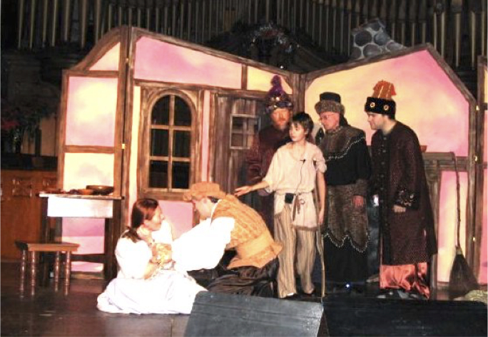
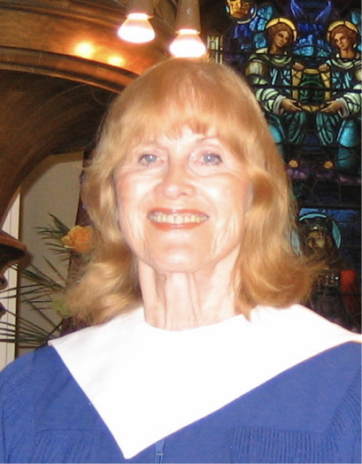

-1-MasterItem.svg)
Stories of Westminster United Church & its People / Page
155
Our first production of Menotti’s
Amahl and the Night
Visitors
in December. The cast: Reid Harrison was
Amahl, Dorothy Howard his mother. Others in the
cast were the Three Kings, Ted Marshall, Bruce Linney,
and Roy Halstead with their page, Keith Love. This
production was repeated in December of 1965.
Our second production featured Susan Harrison
as Mother and Chris Young as Amahl. (The videos
on the previous two pages are excerpts from
that production.)
Our last production (pictured at left) had Tyler
Draychuk as Amahl and Catherine Harrison as
Mother. Roy, Fred and Steven were the kings. (The videos on the next two pages
are excerpts
from that production.)
Costumes were from the huge basement collection of Dr. Victor Leathers, a member
of our congregation. The collection, his hobby, was offered freely to many
amateur
productions in Winnipeg over a period of many years thereby saving these shoe-
string theatre groups the considerable costs of costuming their actors. The
loans of
these costumes also came with free safety pins to hold things together.
In 1967 Dorothy Howard (pictured at left) left Westminster to accompany her
husband to the U.S. where he was pursuing his PhD. On May 21st Elona
Schellenberg
became Alto soloist. In March of that year our choir joined the choir of Young
Church in a
presentation of Mozart’s
Requiem
.
In October of 1967 we celebrated the Congregation’s 75th Anniversary. The world famous
organist, E. Power Biggs, gave us a visit and a fine recital.
Music at Westminster

